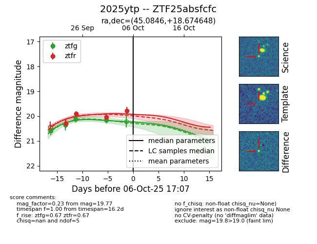
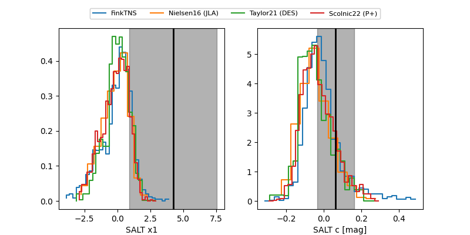

FINK: ZTF25absfcfc
Lasair: ZTF25absfcfc
ALeRCE: ZTF25absfcfc
TNS: 2025ytp
YSE: 2025ytp
ZTF25absfcfc (ztf,fink)
2025ytp (tns,yse)
equatorial (ra, dec) = (45.0846,+18.67465)
galactic (l, b) = (160.7686,-34.55886)


last ztfg=20.15, ztfr=19.77
4 ztfg, 4 ztfr detections